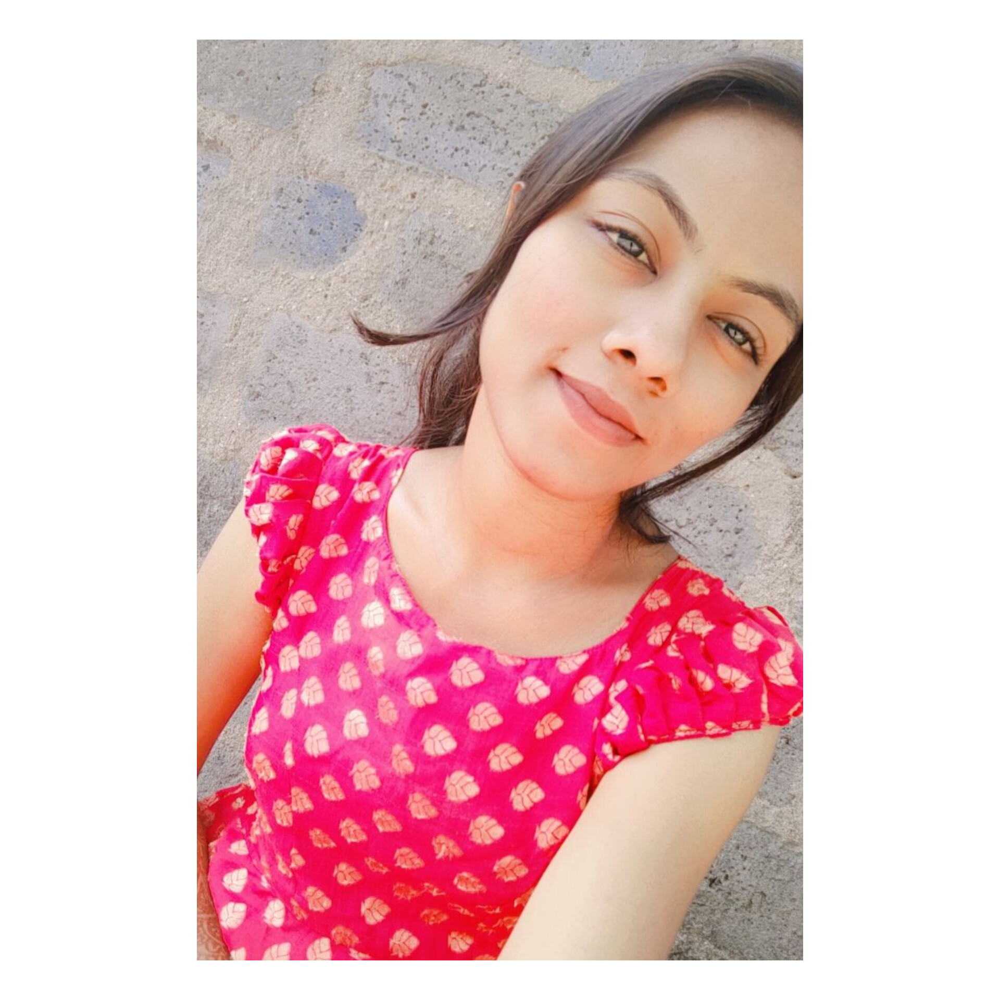

COURSE |
INSTITUTION |
UNIVERSITY |
YEAR OF PASSING |
PERCENTAGE/CGPA |
|---|---|---|---|---|
| b tech(CSE) | university college of engineering and technology |
kakatiya university |
2024 |
8.5 |
intermediate (MPC) |
tswrjc danavaigudem |
board of intermediate education , telangana |
2020 |
9.3 |
SSC |
ZPSS kamanchikal |
board of secondary education , telangana |
2018 |
7.5 |